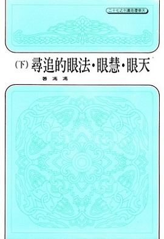

《天眼慧眼法眼的追寻》
1987 年
一九八三年我会见了很多访客，几乎是每天都有数批宾客来访，其中不少是不远千里而来的，从欧洲、远东、南太平洋、美国，各地都有人来探望我，当然大多数仍是华人而且绝大多数是中年以上的知识份子，或是事业有成就的人士，或是有相当社会地位的名人他们在旅游美加的行程中，顺道来访我，谈谈佛法佛理，请我为他们诊看一下健康状况，我也尽可能接见他们，并且为之服务，又分赠一些佛教刊物和佛佛书，结结佛缘，劝劝他们多学佛法，多修行，多行善，我做得多少算多少，不敢以弘法自居，实在也只不过是尽尽心而已，人微言轻，又没有道场，又没有法师身份，只不过是一介寒士，能弘什么法呢？不过，我是感到愉快的，我认为我做了佛教徒应该做的微末分内事那一年认识了很多新朋友，有些以后常有联络，有些则再无音讯，我也总还是怀念他们的。
目录 |
|
|  |